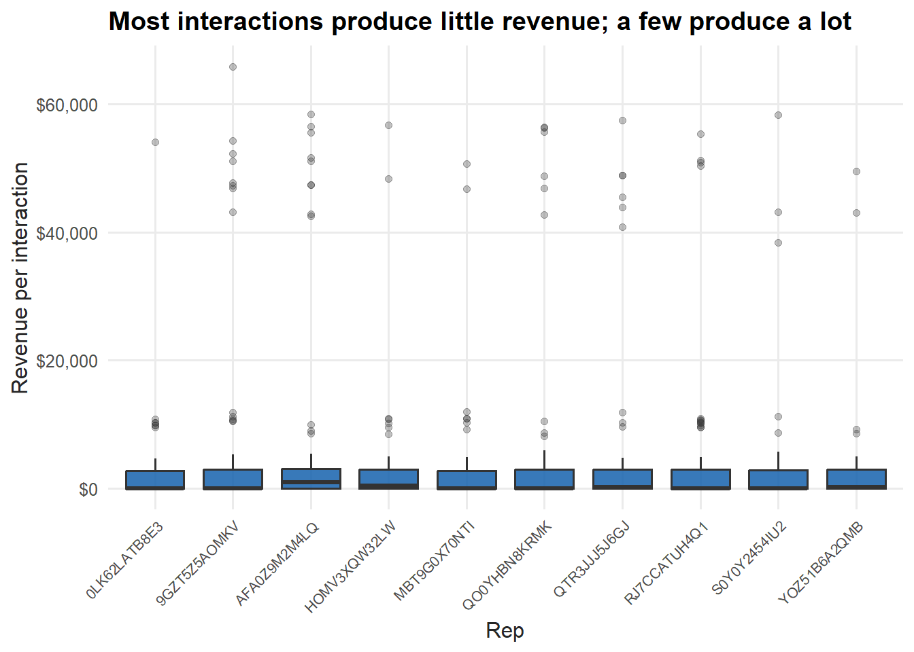
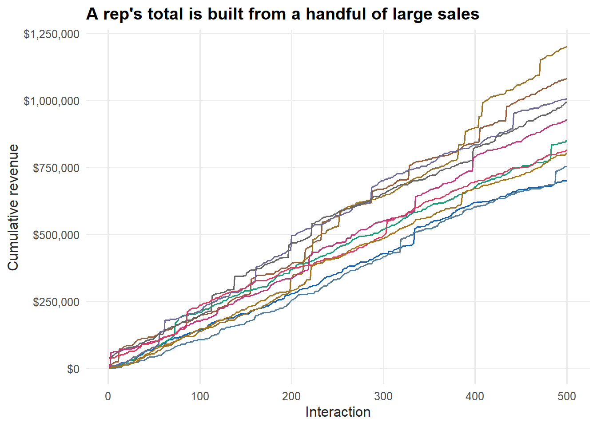
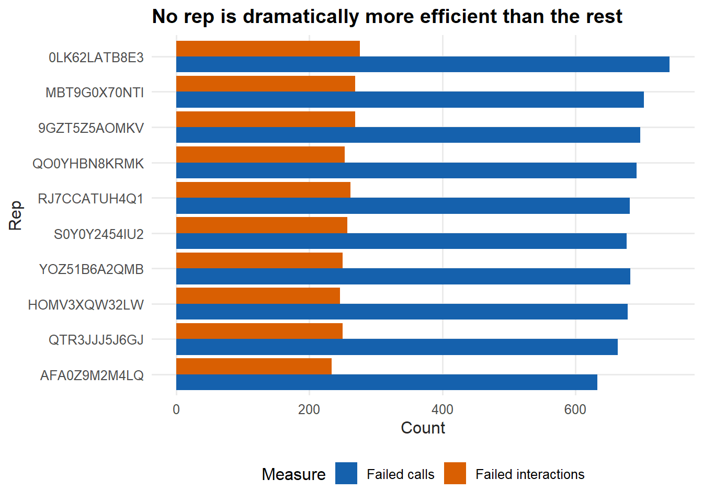
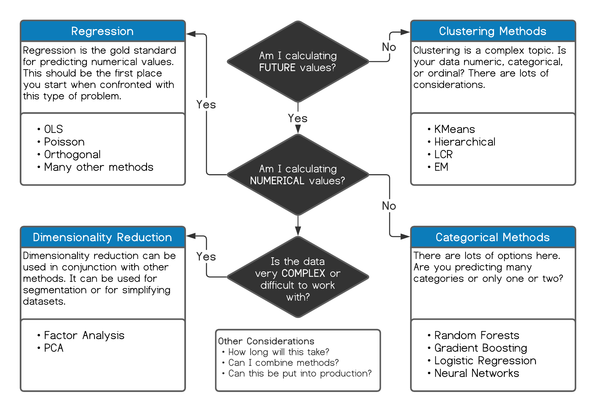

4 Framing analytics projects
Framing is the part of an analytics project that is easiest to skip and most expensive to get wrong. It is tempting to jump straight to the data, because the data is concrete and the question is fuzzy. Resist that urge. A well-framed project saves time, reduces confusion, and gives the work a real chance of influencing a decision. A poorly framed project can produce a technically correct answer to a question nobody needed answered.
This chapter is about that framing. It is one of the most important skills in the book, and it is mostly not technical. It is about asking what the work is for, what would count as an answer, and how the answer will be used.
It helps to think of a project in six parts. They are not always sequential, and you will usually loop back through them more than once, but they are a useful checklist:
- Define a measurable goal or hypothesis
- Collect and manage the data
- Model the data
- Evaluate the results
- Communicate the results
- Deploy the results
Before you ever touch a model, you should be able to answer some practical questions about a project: What decision does this support? Do we have the data and the tools? How long will it take? Have we tried this before, and what happened? Will anyone actually use the result? These questions are not bureaucratic. They are how you avoid spending a month on something that gets glanced at once and forgotten.
It is worth noticing that this mirrors how strategic planning works in general. A common framework describes strategy as a process with four elements (Thomas L. Wheelen 2008):
- Environmental scanning
- Strategy formulation
- Strategy implementation
- Evaluation and control
The premise is the same at every scale. You look at the situation, set objectives, build something to act on them, and then monitor what happens. The idea is not complicated. The discipline is in actually doing it, and in being honest at the evaluation step. This chapter is about that kind of practical, problem-solving strategy. We are not going to address corporate strategy in the sense of mission statements, ownership structure, or league governance. That is a different problem, and it is as much politics as analysis.
4.1 Defining the goal
Defining the goal is usually the hardest part of a project, and it is the part that most determines whether the work succeeds. The difficulty is that the request you receive is rarely the question you need to answer.
A sales team will tell you they want more leads so they can sell more tickets. A marketing team will tell you they want to understand return on marketing investment. These are reasonable starting points, but each one hides several assumptions. Your job is to find the real question underneath the request.
The most useful question to ask is why. There are formal techniques built entirely around this, such as the “5 Whys,” which keeps asking why until you reach a root cause (Serrat 2017). You do not need a formal method. You do need the habit. Without the why, you cannot tell whether the request is the problem or just a symptom of one.
Consider a concrete example. A ticket sales manager tells you, “I need more leads so my reps can sell more season tickets.” That single sentence can mean very different things:
- The reps are not making enough calls, and more calls would mean more sales.
- The current leads are not closing well enough to hit the team’s target.
- There simply are not enough leads to keep the reps busy.
It can also mean something less flattering, because requests are shaped by how people are measured. Freakonomics makes this point well: incentives quietly drive behavior (Levitt 2005). The same request might really be:
- “I need a reason I am missing my number, and more leads is a defensible one.”
- “I am out of ideas, so I am going to push the reps harder.”
- “Just give me what I asked for.”
You do not have to be cynical about this. You do have to recognize that a request carries a built-in theory of the problem, and that theory may be wrong. Here, the manager’s implicit theory is that more calls produce more revenue. That is a claim about the world, and it is one you can check before you commit to a solution.
4.1.1 Testing the assumption behind the request
The aggregated_crm_data table is a small, pre-aggregated CRM extract. Each row is one rep’s activity with one customer: how many calls were placed and how much revenue resulted.
| repID | call | revenue |
|---|---|---|
| MBT9G0X70NTI | 4 | 0.0000 |
| QTR3JJJ5J6GJ | 3 | 533.2436 |
| HOMV3XQW32LW | 2 | 2052.6933 |
| RJ7CCATUH4Q1 | 2 | 0.0000 |
| 9GZT5Z5AOMKV | 1 | 0.0000 |
| S0Y0Y2454IU2 | 4 | 38344.6664 |
If more calls really drove more revenue, we would expect to see it once we roll the data up to the rep level. Ten reps are not many, so treat this as a first look rather than proof, but it is enough to test the idea.
rep_summary <- crm_data |>
group_by(repID) |>
summarise(
calls = sum(call),
revenue = sum(revenue),
.groups = "drop"
) |>
mutate(revenue_per_call = revenue / calls) |>
arrange(desc(revenue_per_call))
knitr::kable(
rep_summary,
caption = "Calls and revenue by rep",
align = "r",
format = "markdown",
padding = 0
)| repID | calls | revenue | revenue_per_call |
|---|---|---|---|
| AFA0Z9M2M4LQ | 1388 | 1202116.0 | 866.0778 |
| 9GZT5Z5AOMKV | 1340 | 1082318.7 | 807.7005 |
| QO0YHBN8KRMK | 1320 | 1006951.6 | 762.8421 |
| QTR3JJJ5J6GJ | 1358 | 993549.1 | 731.6267 |
| RJ7CCATUH4Q1 | 1312 | 927215.9 | 706.7194 |
| HOMV3XQW32LW | 1372 | 851999.3 | 620.9908 |
| S0Y0Y2454IU2 | 1344 | 815876.8 | 607.0512 |
| YOZ51B6A2QMB | 1384 | 804274.7 | 581.1233 |
| MBT9G0X70NTI | 1334 | 752486.0 | 564.0825 |
| 0LK62LATB8E3 | 1326 | 700451.1 | 528.2437 |
The reps make a similar number of calls, but their revenue per call ranges widely. That is already a hint that call volume is not the main story. We can check the relationship directly with a correlation coefficient.
## [1] 0.259The correlation is weak. With only ten reps it is not conclusive, but it points away from the manager’s theory: the rep who makes the most calls is not the one who brings in the most revenue. So what is different about the stronger reps?
A box plot of revenue by rep is a good place to start, because it shows the spread of outcomes, not just the average.
ggplot(crm_data, aes(x = factor(repID), y = revenue)) +
geom_boxplot(fill = plot_palette[1], alpha = 0.85, outlier.alpha = 0.3) +
scale_y_continuous(labels = scales::dollar) +
labs(
x = "Rep",
y = "Revenue per interaction",
title = "Most interactions produce little revenue; a few produce a lot"
) +
book_theme +
theme(axis.text.x = element_text(angle = 45, hjust = 1, size = 8))
Figure 4.1: Revenue per interaction by rep
The boxes look similar across reps, but every rep has a long tail of high-revenue outliers. The typical interaction produces almost nothing, and a small number of large sales account for most of the revenue. That pattern is common in sales data, and it changes the question: the reps are not separated by their average call, they are separated by how often they land a big one.
A cumulative-revenue line makes the same point in a different way. Each line climbs as a rep works through their interactions, and the steep jumps are the large sales.
cumulative <- crm_data |>
group_by(repID) |>
mutate(
cumulative_revenue = cumsum(revenue),
interaction = row_number()
) |>
ungroup()
ggplot(cumulative, aes(x = interaction, y = cumulative_revenue,
group = repID, color = repID)) +
geom_line(linewidth = 0.7) +
scale_color_manual(values = colorRampPalette(plot_palette)(10), guide = "none") +
scale_y_continuous(labels = scales::dollar) +
labs(
x = "Interaction",
y = "Cumulative revenue",
title = "A rep's total is built from a handful of large sales"
) +
book_theme
Figure 4.2: Cumulative revenue by rep
The jumps confirm it. A rep’s season is built from a few big deals dropped into a long stretch of small ones. Now we can ask a sharper pair of questions:
- Are some reps more efficient with their calls?
- Are some reps more effective at turning an interaction into any sale at all?
The second question is about failure. More than half of these interactions produce no revenue, so it is worth looking at where the zeros pile up.
failures <- crm_data |>
filter(revenue == 0) |>
group_by(repID) |>
summarise(
failed_calls = sum(call),
failed_interactions = n(),
.groups = "drop"
) |>
pivot_longer(!repID, names_to = "measure", values_to = "value")
ggplot(failures, aes(x = reorder(repID, value, sum), y = value, fill = measure)) +
geom_col(position = "dodge") +
scale_fill_manual(
"Measure",
values = plot_palette[1:2],
labels = c("Failed calls", "Failed interactions")
) +
scale_y_continuous(labels = scales::comma) +
coord_flip() +
labs(
x = "Rep",
y = "Count",
title = "No rep is dramatically more efficient than the rest"
) +
book_theme
Figure 4.3: Failed calls and interactions by rep
No rep stands out as far more efficient than the others, though there is some spread between the top and bottom. That pushes us back toward the size of the wins. Let’s look at the distribution of revenue across all interactions.
revenue_quantiles <- quantile(
crm_data$revenue,
probs = c(0.50, 0.75, 0.90, 0.95, 0.975, 0.99, 1)
)
knitr::kable(
data.frame(
quantile = names(revenue_quantiles),
revenue = as.numeric(revenue_quantiles)
),
caption = "Revenue quantiles across all interactions",
align = "r",
format = "markdown",
padding = 0
)| quantile | revenue |
|---|---|
| 50% | 0.000 |
| 75% | 2924.658 |
| 90% | 3694.630 |
| 95% | 4136.399 |
| 97.5% | 4631.669 |
| 99% | 10886.958 |
| 100% | 65789.102 |
At least half of all interactions produce no revenue at all. The 99th percentile is over $10,000, and the largest single result is more than $65,000. The business runs on the right tail of this distribution.
To see how that tail separates reps, compare the strongest and weakest performers from the rep table directly.
top_rep <- rep_summary$repID[1]
bottom_rep <- rep_summary$repID[nrow(rep_summary)]
rep_compare <- crm_data |>
filter(repID %in% c(top_rep, bottom_rep)) |>
group_by(repID) |>
summarise(
interactions = n(),
mean_revenue = mean(revenue),
median_revenue = median(revenue),
share_with_sale = mean(revenue > 0),
max_revenue = max(revenue),
.groups = "drop"
)
knitr::kable(
rep_compare,
caption = "Strongest versus weakest rep",
align = "r",
format = "markdown",
padding = 0
)| repID | interactions | mean_revenue | median_revenue | share_with_sale | max_revenue |
|---|---|---|---|---|---|
| 0LK62LATB8E3 | 500 | 1400.902 | 0.0000 | 0.448 | 54039.92 |
| AFA0Z9M2M4LQ | 500 | 2404.232 | 963.9552 | 0.532 | 58428.16 |
The stronger rep averages more than 70% more revenue per interaction. Just as important, their median is above zero, which means they make a sale more often than not, while the weaker rep’s median is zero. Now look at where the big deals landed.
high_cut <- revenue_quantiles[["99%"]]
high_end <- crm_data |>
filter(repID %in% c(top_rep, bottom_rep), revenue >= high_cut) |>
group_by(repID) |>
summarise(
high_deals = n(),
high_revenue = sum(revenue),
.groups = "drop"
)
knitr::kable(
high_end,
caption = "Top-percentile deals by rep",
align = "r",
format = "markdown",
padding = 0
)| repID | high_deals | high_revenue |
|---|---|---|
| 0LK62LATB8E3 | 1 | 54039.92 |
| AFA0Z9M2M4LQ | 9 | 453204.04 |
The stronger rep closed nine of these top-percentile deals to the weaker rep’s one, and roughly eight times as much high-end revenue. Coupled with closing something more often, that is the answer to why some reps outperform.
So what have we established?
- Call volume is only weakly related to revenue.
- Reps are not dramatically different in raw efficiency.
- The strong reps close more often and, above all, land far more large deals.
That changes the recommendation. If calls barely move revenue, the goal should not be “make more calls,” and it probably should not be “hire more reps” either, unless something like experience or lead quality turns out to matter. Those two responses — call more, hire more — are the reflexive answers, and the data does not support either one here. The better questions are about what produces large deals: Are experienced reps better at it? Where do the big sales originate, and are some of them really brokers? Does the time of year matter? Did the reps start at different times?
This is the entire point of the section. To set a real goal, you need an objective reason to believe it is the right one. Find out what is actually driving the outcome before you commit to a tactic. That sounds obvious. It is routinely skipped, sometimes for political reasons.
4.2 Collecting the data
Once you know the question, you have to get the data to answer it. This is usually the most time-consuming part of any project, and it is easy to underestimate. It helps to know where data tends to come from:
- Internal transactional data from ticketing, CRM, and other systems. You usually have years of it, though formatting and consistency can be a problem.
- External transactional data from partners, such as a concessions or parking operator.
- Third-party data from vendors like Acxiom.
- Public data, such as census records or other public filings.
- Internal research, such as surveys and competitive intelligence.
It is worth being honest about scale. A professional sports team is not Google, Facebook, or Amazon. Those companies build analytics on a volume and sophistication of data that a club simply does not have. In practice that means partnering with them if you want their capabilities, and partnering comes with limits. These platforms are walled gardens, and they do not like to share. It also means thinking critically about what you are buying. If you spend on search-engine marketing, ask how attribution really works. If someone was always going to type “Game Hens tickets” into a search bar, attributing that sale to your search spend is easy and also misleading.
Internal data — transactions, call activity, loyalty programs, surveys — is generally more reliable, but it is not unrestricted. Depending on where you operate, the law constrains how you collect, store, and use it. A few examples in the United States:
- The California Consumer Privacy Act 19
- The Illinois Biometric Information Privacy Act 20
- The CAN-SPAM Act 21
- The National Do Not Call Registry 22
That list is not comprehensive, and Europe’s GDPR reaches far enough to affect work done in the United States. As biometrics become more common, this area will only get harder to navigate.
Third-party data carries a different warning: it is often modeled, not observed. Brokers infer attributes from indirect signals — sometimes guessing ethnicity or gender from a surname — and aggregate from many sources of uneven quality. Unless you are working with very large datasets, which is uncommon in sports, third-party data can be frustrating and only roughly accurate. Use it for supplementary context, not for decisions that demand precision.
Some data has no ready-made source at all. Suppose an executive wants to understand how concession line length relates to attendance. Unless you have cameras with computer vision counting the lines, you will have to collect the data by hand, using a rubric simple enough for front-line staff to follow consistently. That kind of operational collection is a project in itself, and we return to it in Chapter 10. The same two questions always anchor it:
- What question are you actually trying to answer?
- What data do you need to answer it?
Public sources are abundant but rarely granular enough for operational decisions. Census data, for instance, has excellent APIs and is useful for long-range planning, but it will not tell you much about an individual customer. And do not overlook competitive intelligence — visiting other venues to observe pricing and operations, or studying adjacent industries. There is a lot to learn about loyalty programs from a company like Starbucks.
The takeaway is simple: collecting data takes IT skill, research judgment, and critical thinking, and it will consume the majority of your time. Do not treat it as an afterthought.
4.3 Modeling the data
Modeling is the part most analysts enjoy. Here, “modeling” means analyzing the data, not designing a database schema, although structuring the data is part of the work. We are not going to build a model in this chapter — Chapter 5 does that in detail — but it is worth setting up how to think about the step.
A quick word on tools. At a minimum you will use SQL plus one analysis language, usually R or Python. This space has largely been commoditized, and the advantage of one tool over another is often small. Pick one and get good at it. This book uses R (R Core Team 2021), which remains excellent for statistics, visualization, and teaching. Python is equally capable and is often easier to deploy.
One real difference is consistency. In Python, most modeling code looks the same from one method to the next. Clustering with one algorithm in scikit-learn (Pedregosa et al. 2011) looks almost identical to clustering with another:
from sklearn.cluster import AgglomerativeClustering
cluster = AgglomerativeClustering(n_clusters=6, linkage="ward")
labels = cluster.fit_predict(data)from sklearn.cluster import KMeans
cluster = KMeans(n_clusters=6, random_state=0)
labels = cluster.fit_predict(data)R is more varied, because different algorithms come from different authors with different conventions:
mod_data <- cluster::daisy(data)
clustering <- stats::hclust(mod_data, method = "ward.D")
data$cluster <- stats::cutree(clustering, k = 6)
clustering <- stats::kmeans(data, centers = 6)
data$cluster <- clustering$clusterR’s variety can feel like the wild west, but frameworks such as caret (Kuhn 2021), mlr3 (Lang et al. 2022), and tidymodels (Kuhn and Wickham 2021) wrap many methods in a common interface, and reticulate (Ushey et al. 2022) even lets you call Python from R. The two languages have learned from each other. The choice matters less than the habit of working cleanly and reproducibly.
Whatever the tool, the modeling step itself has a few stages that you will repeat, often out of order.
4.3.1 Evaluate the data
Before you model anything, understand what you are looking at. How is the data structured, and what are you trying to do with it? Useful questions include:
- What question am I answering with this data?
- Have we tried to solve this before, and what happened?
- Are there strongly held beliefs about what the answer should be?
- How is the data formatted, and how current is it?
- Where did it come from? Can I trust it?
- How much is missing, and why is it missing? The reason can matter a great deal.
- Is the data categorical, ordinal, numeric, or mixed? Are there differences in scale?
- What will I do if I find nothing, and how likely is that?
Spending time here is what makes the later results trustworthy. Be especially careful when there is a strongly held belief about the answer. Those beliefs usually exist for a reason, and most of the time the people who hold them are right. If your analysis contradicts one, slow down and make sure you are correct before you make the case.
4.3.2 Prepare the data
Preparation generally takes the most time, and Chapter 5 walks through it in detail. Two questions dominate it:
- How will I handle missing data?
- What methods will I apply, and what do they require of the data?
Missing data is a recurring headache. What do you do with NA, NaN, or infinite values, and how sparse is too sparse? The answers vary, but one rule does not: if there is a systematic reason the data is missing, your results may be invalid no matter how clean the model looks. We cover imputation and missingness fully in Chapter 5.
Prepare your data with code, not by hand. Projects always come back, and a documented, scripted pipeline is the only way to rerun one reliably. A reasonable habit is to do the heavy lifting in SQL but stop before you bake in analysis decisions — for example, leave dummy-coding for the analysis step, because how you turn numeric data into discrete categories will change your results.
4.3.3 Choose a technique
Choosing a method used to require real expertise, partly because computing time was scarce and an analyst had to know the right approach before spending it. Hardware and software have removed that constraint. A modern analyst can afford to try several methods and compare them. Figure 4.4 sketches one way to narrow the choice.

Figure 4.4: Choosing a technique
The abundance of methods creates its own trap. It is easy to fall into a rut and reach for your favorite tool on every problem. If your favorite is deep learning, everything starts to look like a deep-learning problem. Sometimes you need a wrench, not a hammer.
4.3.4 Process the data
Start with the simplest approach that could work. Parsimonious models are easier to interpret, easier to maintain, and more durable. Consider a typical request:
The ticket sales manager wants to know which customers are most likely to buy season tickets, and which are most likely to spend more or upgrade their seats.
That is a classification problem, the kind we tackle as lead scoring in Chapter 7. Ordinary least squares regression is the standard starting point for estimating a number, and logistic regression is the standard starting point for estimating a class. There are extensions, such as multinomial logistic regression (Ripley 2022) for more than two classes. These methods are good first stops precisely because they are interpretable — far easier to explain than a black box.
With experience you will find that certain methods suit certain problems, and that several methods often give similar answers. Random forests and gradient boosting, for example, tend to land in the same place. They are less interpretable than regression but demand less statistical bookkeeping — regression makes you think about heteroskedasticity, multicollinearity, and autocorrelation, among other things. A good habit is to run more than one method and compare. Agreement across methods is reassuring, and unless the data is huge, the extra effort is cheap.
Finally, keep deployment in mind from the start. A regression is just a formula, so it computes instantly and does not drift. Adaptive methods can change behavior over time and produce surprises if they are not monitored; there are well-known cases of chatbots learning ugly behavior in the wild 23. Stick to the simplest approach unless you genuinely need more precision or deployment demands something specific.
4.4 Evaluating the results
Evaluation can be the best or the worst part of a project, and it is never purely technical. Even when you do not find the answer you hoped for, you learn something. A null result can mean there is no signal in the data, or that the problem is more subtle than you framed it. Consider an example:
A marketing manager wants to know whether outreach is helping retain season-ticket holders.
You pull the CRM data — calls, emails, attendance at non-game events — and model the probability that an account renews. Suppose outreach turns out to be irrelevant, and only ticket usage and tenure matter. Does that mean you should stop calling clients? Of course not. It means you should look harder at how outreach is being measured and how reps are incentivized, and it means you must communicate the finding carefully. A result that says “your effort does not show up in the data” is easy to hear the wrong way.
There is also a technical side. Models can be compared with an ANOVA, the AIC, or the BIC. A campaign’s effectiveness can be summarized with a lift chart or an ROC curve. OLS regression leans on the F-statistic, p-values, and R-squared; logistic regression on accuracy, precision, sensitivity, specificity, and overdispersion. Results can be cross-validated and checked against a holdout sample or a control group. Once something is in production, A/B testing is usually the best way to confirm it keeps working.
Evaluation takes both statistical rigor and domain judgment. You do not have to find a solution, but you should always learn something. This is the second most time-consuming part of a project, and it has the largest influence on whether the project ultimately succeeds.
4.5 Communicating the results
Getting a finding into the hands of the people who will act on it is harder than it sounds, especially when the method is unfamiliar. Large consulting firms have entire frameworks for framing problems and results, and you can borrow from them. But the hardest obstacle is rarely the math. It is bias.
“We often use reasoning not to find truth but to invent arguments to support our deep and intuitive beliefs.”
— Jonathan Haidt, The Happiness Hypothesis
Haidt’s point about confirmation bias (Haidt 2006) matters here. If a result challenges a strongly held belief, expect resistance, and remember that the belief may have merit. Think about how a finding will land before you present it — especially if it could make someone look wrong or feel threatened. The words you choose matter.
A practical rule of thumb: the more senior the audience, the fewer words and the more conclusions; the more technical the audience, the more explanation and the more graphs.
- Executives: a few bullet points that lead with the recommendation. Be brief and get to the point.
- Managers: more detail tied to their domain, with the reasoning they need to act.
Resist the urge to show off your own expertise. Almost no one cares about support vectors, eigenvalues, or which deep-learning architecture you used. They care about the result, and sometimes about how you got there — usually only when it contradicts what they believed. Take a collaborative tone and ask questions. Over time that earns the credibility that gets your work implemented.
R helps here too. R Markdown (Allaire et al. 2020) makes it easy to produce documents that combine prose, code, graphics, and formulas — this book was written with it — and Shiny (Chang et al. 2021) turns analyses into interactive applications.
4.6 Deploying the results
Deployment means two different things:
- Communicating the results, which we just covered.
- Operationalizing the output — putting it into production.
The second is about automation: turning a one-time analysis into something that runs on its own. This is often where other languages have an edge over R, since compiled languages like C++ can be much faster, though there are exceptions. SQL Server has supported R and Python since 2016 24, and the major cloud platforms — Google, Amazon, Microsoft — all build analytics into their data warehouses and let you scale up computing power on demand. Much of the work of making a model run efficiently has already been done for you.
There are many places this pays off:
- Ticket-sales forecasts that refresh a report daily, or by the minute.
- Lead scores that update through the season as conditions change.
- A marketing campaign’s predicted-versus-actual results monitored continuously for ROI.
- Ticket prices adjusted automatically to optimize sales or revenue.
At the simple end, you can schedule a script with a batch file. The following runs an R script from a scheduler or another program:
# REM Call an R script from a scheduler or another program.
# "C:\Program Files\R\R-Version\bin\x64\R.exe" CMD BATCH \
# --vanilla --slave "C:\path\to\YourRScript.R"For anything more involved, you will likely work with developers to put the process into production. Your context and the skills available to you will decide the approach.
4.7 Key concepts and chapter summary
How you frame a project is one of the biggest factors in whether it succeeds, and it matters more as projects grow and involve more people. Almost any project benefits from the same six-step process:
- Define a measurable goal or hypothesis
- Collect and manage the data
- Model the data
- Evaluate the results
- Communicate the results
- Deploy the results
You will move through these steps whether you intend to or not — they are the natural order of the work. A few points are worth holding onto:
- Defining the goal is the hard part, and the important part. Find the real question behind the request, and get an objective reason to believe it is the right one before you commit to a tactic. In the CRM example, the request was “more calls,” but the data said calls barely mattered and large deals were everything.
- Collecting and managing data takes the most time. Quality data can be hard or impossible to get. If you have to collect it yourself, be systematic and document the process so you can repeat it.
- Modeling is the enjoyable part, so guard against falling in love with one method. Start simple. Interpretability is often worth more than a small gain in accuracy.
- Evaluation is quantitative and qualitative. Give every result a smell test. Is it logical? Can you act on it? Does it answer the goal?
- Communicate for the audience, not for yourself. “Simplicity is the ultimate sophistication.” Lead with the conclusion, and remember that bias, not math, is usually the obstacle.
- Deployment can mean a conversation or a production system. There are plenty of tools for both.
Chapter 5 puts this framework to work on a real problem — building a customer segmentation — and confronts one of the most common obstacles in applied analytics: missing data.